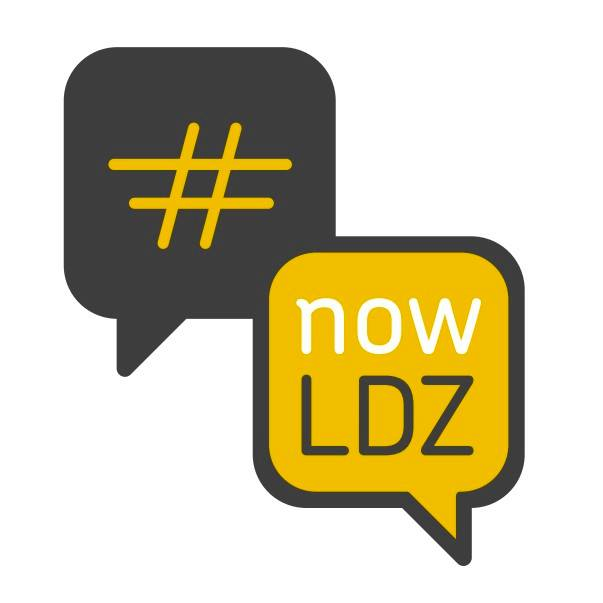
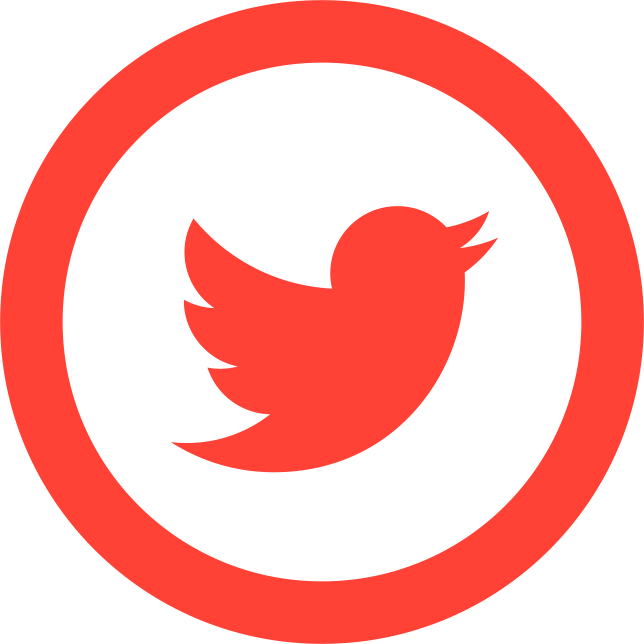
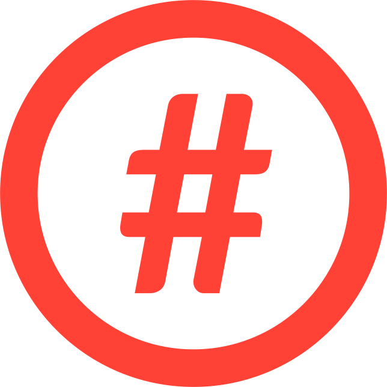

<!DOCTYPE html>
<html></html>
  <head>
    <meta charset="utf-8">
    <meta http-equiv="X-UA-Compatible" content="IE=edge,chrome=1">
    <title>#nowLDZ</title>
    <meta name="description" content="#nowLDZ - Łódź startup/tech communities flagship hashtag">
    <meta name="viewport" content="width=device-width">
    <link href='http://fonts.googleapis.com/css?family=Oswald:400,700,300&subset=latin,latin-ext' rel='stylesheet' type='text/css'>
    <link href='http://fonts.googleapis.com/css?family=Lato:300,400,700' rel='stylesheet' type='text/css'>
    <link rel="stylesheet" href="css/normalize.min.css">
    <link rel="stylesheet" href="css/main.css">
  </head>
  <body>
    <section class="page-header">
      <div class="centered-wrapper centered-text">
        
        <h3>unite tech/startup communities in&nbsp;Łódź</h3>
        <ul class="social-links">
          <li>
            <a href="http://twitter.com/nowLDZcom" target="_blank">
              
            </a>
          </li>
          <li>
            <a href="http://facebook.com/nowLDZ" target="_blank">
              
            </a>
          </li>
          <li>
            <a href="http://tagboard.com/nowLDZ" target="_blank">
              
            </a>
          </li>
        </ul>
      </div>
    </section>
    <script iframe-height="800" iframe-width="100%" iframe-src="https://story.mapme.com/1d81f334-be9b-4f30-a266-139d61f9644d" src="https://hosting.mapme.com/story-embed.js"></script>
    <section class="info-box">
      <div class="centered-wrapper">
        <h2>What &amp; why</h2>
        <p>
  There are amazing initiatives and ideas happening in Łódź around technology and startups these days.
  We would like create common brand uniting all of them for better communication, cooperation and growth of this incredible community. Brand that will be well-known and recognizable among technology passionates, startups and enterpreneurs world wide.
        </p>
      </div>
    </section>
    <section class="info-box">
      <div class="centered-wrapper">
        <h2>Get involved</h2>
        <p>
  To make all this happen we need your support. Whenever you organize or attend a tech/enterpreneur meetup in Łódź, boot-up a startup or simply have great idea you want to build upon, let others know about it and don't forget to include our flagship hashtag. Follow <b>#nowLDZ</b> on Twitter and Facebook to be always up to date.
        </p>
      </div>
    </section>
    <section class="info-box centered-text">
      <h2>Join <b class="gray">#nowLDZ</b> community!</h2>
      <ul class="social-links">
        <li>
          <a href="http://twitter.com/nowLDZcom" target="_blank">
            
          </a>
        </li>
        <li>
          <a href="http://facebook.com/nowLDZ" target="_blank">
            
          </a>
        </li>
        <li>
          <a href="http://tagboard.com/nowLDZ" target="_blank">
            
          </a>
        </li>
      </ul>
    </section>

    <script>
      (function(i,s,o,g,r,a,m){i['GoogleAnalyticsObject']=r;i[r]=i[r]||function(){
      (i[r].q=i[r].q||[]).push(arguments)},i[r].l=1*new Date();a=s.createElement(o),
      m=s.getElementsByTagName(o)[0];a.async=1;a.src=g;m.parentNode.insertBefore(a,m)
      })(window,document,'script','//www.google-analytics.com/analytics.js','ga');

      ga('create', 'UA-47475707-1', 'nowldz.com');
      ga('send', 'pageview');

    </script>

  </body>
</html>
